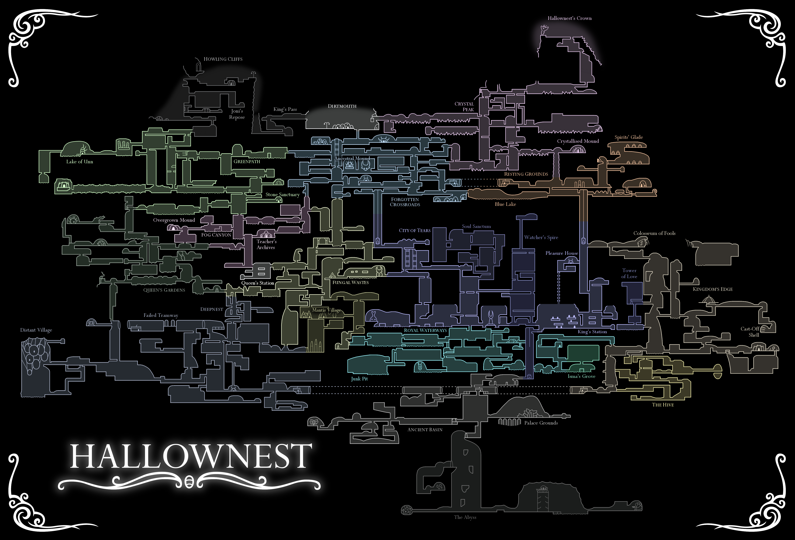
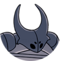
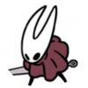
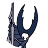
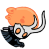
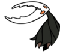
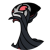

Hollow Knight se déroule dans un vaste royaume souterrain appelé Hallownest.

Dans le jeu, on retrouve de nombreux boss cachés un peu partout dans Hallownest.
Voici un exemple de quelques boss principaux que l'on peut retrouver :
| Apparence | Nom | Description |
|---|---|---|
 | Faux Chevalier | Le Faux Chevalier est le tout premier boss du jeu. On apprend plus tard qu'il s'agissait d'une petite créature qui avait en fait pris une armure sur le corps d'un insecte, ce qui explique son nom. |
 | Hornet | Hornet est le deuxième boss important du jeu. Elle souhaite comprendre notre nature. Elle nous affronte alors en duel afin de tester notre persévérance pour nous préparer au reste d'Hallownest. |
 | Dames mantes | Les Dames Mantes, au nombre de 3, sont les cheffes des Mantes, un peuple guerrier reculé du royaume. Elles ont survécu à l'Infection. |
| Maître de l'âme | Le Maître de l'Âme est un puissant mage qui voulait toujours plus de pouvoirs. Quand il a entendu parler de l'Infection, il a pensé qu'il pourrait la contrôler, mais il a fini par devenir fou et s'est alors isolé. | |
 | Vaisseau corrompu | Le Vaisseau corrompu est de la même espèce que la nôtre. Il n'a malheureusement pas résisté à l'Infection et on se retrouve obligé de l'affronter. Une fois battu, il retrouve brièvement ses esprits et nous reconnaît avant de mourir. |
 | Hollow Knight | Le Hollow Knight est également de notre espèce. C'est le boss final du jeu. Le Roi Pâle l'a créé dans le but de contenir l'Infection. N'étant finalement pas assez pur pour la contenir, il a fini par être corrompu. Au cours du combat, il parvient parfois à reprendre le contrôle et nous aide en s'infligeant lui-même des coups. |
 | Grimm, Maître de la Troupe | Grimm vient d'un autre royaume. Il peut venir à Hallownest si notre personnage l'appelle en rallumant le feu d'une sorte de grande torche. |
| Radiance | Radiance est un boss secret du jeu. On peut l'affronter si on réalise certaines actions bien précises et en récupérant certains objets. C'est un ancien dieu d'Hallownest qui a été peu à peu oublié de tous après l'arrivée du Roi Pâle*. Pour revenir après avoir été oubliée, elle a commencé à influencer les rêves des insectes, provoquant ainsi l'Infection. |
* Le Roi Pâle est un être divin qui a offert aux insectes d'Hallownest la capacité de penser et de réfléchir par eux-mêmes. C'est grâce à ce don qu'il a remplacé Radiance, qui était autrefois vénérée.